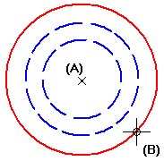

Draw a circle by center point

-
Choose the Circle By Center Point command .
-
Click where you want the center point to be (A).
-
Click to define the radius (B), or enter a value in either the diameter or radius edit box.
-
Before clicking to define the center point, you can type a diameter or radius value on the Circle command bar. You can then just click to continue placing circles at the value entered.
-
IntelliSketch places relationship handles.
-
The IntelliSketch command supports horizontal and vertical alignment for the center points of circles. When you place a circle and the center point input recognizes a horizontal or vertical alignment with the center point of another circle, the horizontal or vertical alignment relationship is applied.
-
You can use the options on the Circle command bar and the commands on the shortcut menu to edit a circle.